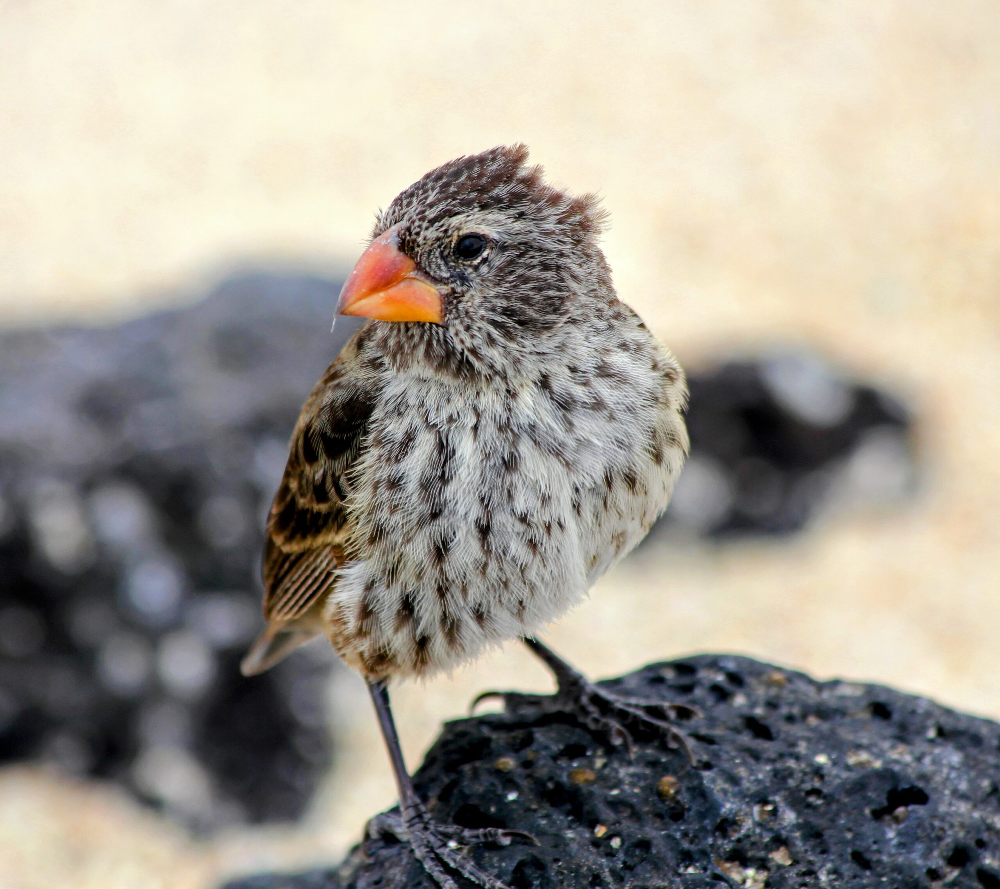

Effects of an Introduced Parasitic Nest Fly Philornis downsi on Galapagos Birds
• Perform RNA-Seq analysis with reference genome (Geospiza fortis) and identify differentially expressed genes in nestling and adult female (mother) finches in relation to several conditions: urban, non-urban, parasitized, non-parasitized
• Determine if birds evolve resistance to parasite and if urbanization influences host-parasite-microbiome interactions of finches